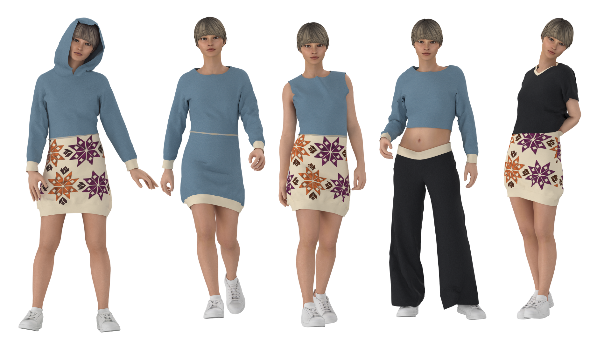
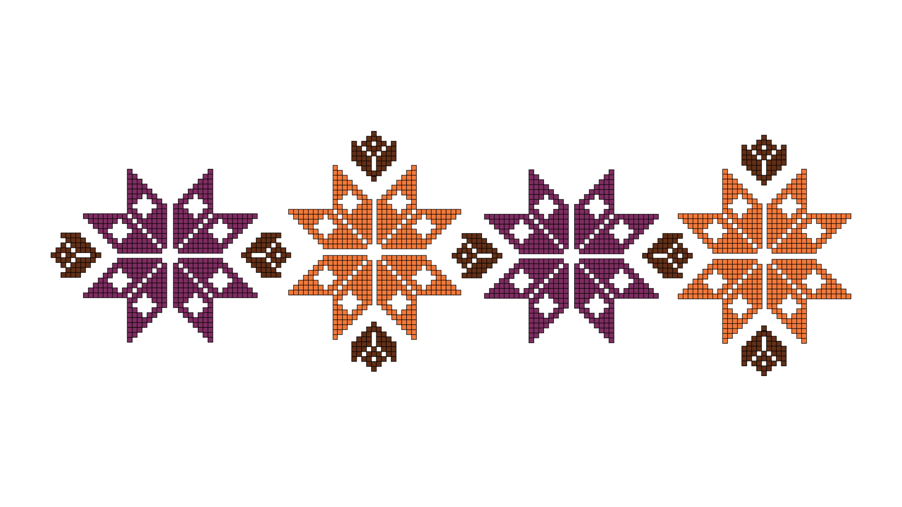

Versa
Versa surge del análisis formal y visual de la Mochila Wayuu, el Sombrero Vueltiao y el Mopa-Mopa. El patrón retoma la lógica geométrica de los tejidos, reiterpretando sus composiciones radiales y repetitivas desde un lenguaje contemporáneo, sumado a ligeras referencias al Mopa-Mopa, particularmente en la síntesis de formas florales.
La prenda cuenta con un sistema de cremalleras desmontables que permite seis configuraciones: buzo con capota, buzo sin capota, chaleco, buzo corto y falda.